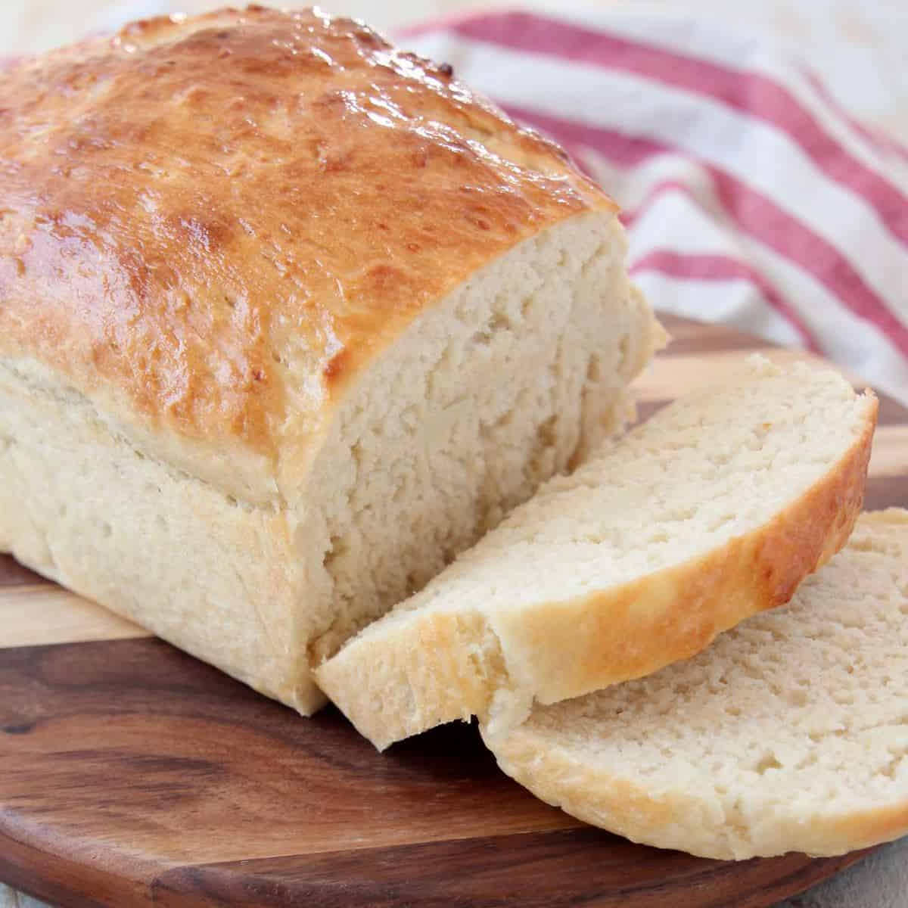

Sourdough Potato Bread

Ingredients
- 100g sourdough starter
- 120g Milk
- 75g Butter, softened
- 50g Sugar
- 22g Instant potato flakes with 118g of hot water
- 1 egg
- 10g salt
- 440g Flour
Directions
- Mix all ingredients together until smooth dough forms
- Transfer dough to oiled bowl and cover, let rest until dough has doubled in size
- Shape the dough, cover and wait until the dough has double in size again
- Bake at 375F for 12-15 minutes
- Brush the freshly baked bread with butter while still warm
Return to main page